魔数0x5f3759df
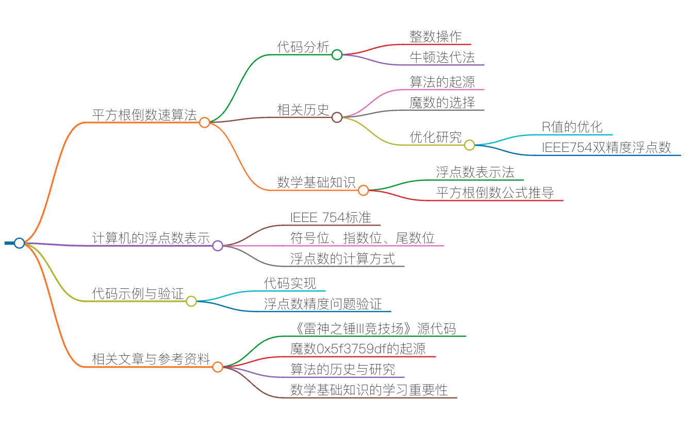
下列代码是在《雷神之锤 III 竞技场》源代码中的一个函数（已经剥离了 C 语言预处理器的指令）。其实，最早在 2002 年（或 2003 年）时，这段平方根倒数速算法的代码就已经出现在 Usenet 与其他论坛上了，并且也在程序员圈子里引起了热烈的讨论。
我先把这段代码贴出来，具体如下：
float Q_rsqrt( float number )
{
long i;
float x2, y;
const float threehalfs = 1.5F;
x2 = number * 0.5F;
y = number;
i = * ( long * ) &y; // evil floating point bit level hacking
i = 0x5f3759df - ( i >> 1 ); // what the fuck?
y = * ( float * ) &i;
y = y * ( threehalfs - ( x2 * y * y ) ); // 1st iteration
// 2nd iteration, this can be removed
// y = y * ( threehalfs - ( x2 * y * y ) );
return y;
}
这段代码初读起来，我是完全不知所云，尤其是那个魔数 0x5f3759df，根本不知道它是什么意思，所以，注释里也是 What the fuck。今天这节课，我主要就是想带你来了解一下这个函数中的代码究竟是怎样出来的。
其实，这个函数的作用是求平方根倒数，也就是下面这个算式：
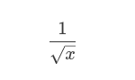
当然，它算的是近似值。只不过这个近似值的精度很高，而且计算成本比传统的浮点数运算平方根的算法低太多。在以前那个计算资源还不充分的年代，在一些 3D 游戏场景的计算机图形学中，要求取照明和投影的光照与反射效果，就经常需要计算平方根倒数，而且是大量的计算——对一个曲面上很多的点做平方根倒数的计算。也就是需要用到下面的这个算式，其中的 x,y,z 是 3D 坐标上的一个点的三个坐标值。
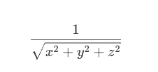
基本上来说，在一个 3D 游戏中，我们每秒钟都需要做上百万次平方根倒数运算。而在计算硬件还不成熟的时代，这些计算都需要软件来完成，计算速度非常慢。
我们要知道，在上世纪 90 年代，多数浮点数操作的速度更是远远滞后于整数操作。所以，这段代码所带来的作用是非常大的。
计算机的浮点数表示
为了讲清楚这段代码，我们需要先了解一下计算机的浮点数表示法。在 C 语言中，计算机的浮点数表示用的是 IEEE 754 标准，这个标准的表现形式其实就是把一个 32bits 分成三段。
- 第一段占 1bit，表示符号位。代称为 S（sign）。
- 第二段占 8bits，表示指数。代称为 E（Exponent）。
- 第三段占 23bits，表示尾数。代称为 M（Mantissa）。
如下图所示：
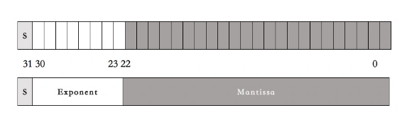
然后呢，一个小数的计算方式是下面这个算式：
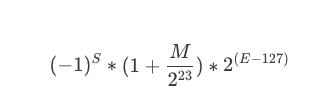
但是，这个算式基本上来说，完全就是让人一头雾水，摸不着门路。对于浮点数的解释基本上就是下面这张漫画里表现的样子。
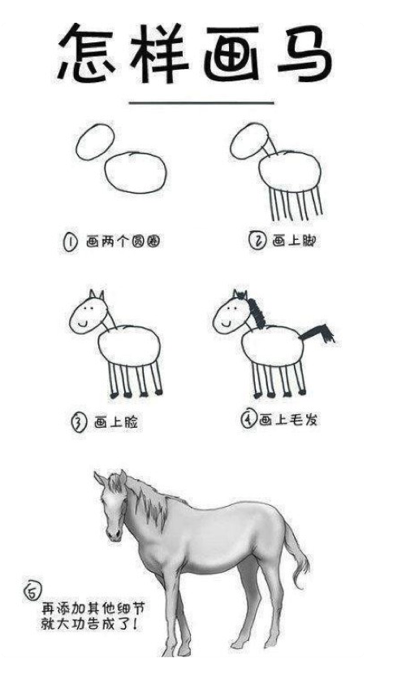
下面，让我来试着解释一下浮点数的那三段表示什么意思。
- 第一段符号位。对于这一段，我相信应该没有人不能理解
- 第二段指数位。什么叫指数？也就是说，对于任何数 x，其都可以找到一个 n，使得 2n<=x<=2n+1。比如：对于 3 来说，因为 2 < 3 < 4，所以 n=1。而浮点数的这个指数为了要表示 0.00x 的小数，所以需要有负数，这 8 个 bits 本来可以表示 0-255。为了表示负的，取值要放在 [-127,128] 这个区间中。这就是为什么我们在上面的公式中看到的 2(E−127) 这一项了。也就是说，n=E−127，如果 n=1，那么 E 就是 128 了。
- 第三段尾数位。也就是小数位，但是这里叫偏移量可能好一些。这里的取值是在[ 0 - 223]中。你可以认为，我们把一条线分成 223 个线段，也就是 8388608 个线段。也就是说，把 2n 到 2n+1 分成了 8388608 个线段。而存储的 M 值，就是从 2n 到 x 要经过多少个段。这要计算一下，2n 到 x 的长度占 2n 到 2n+1 长度的比例是多少。
我估计你对第三段还是有点不懂，那么我们来举一个例子。比如说，对 3.14 这个小数。
- 是正数。所以，S = 0。
- 21 < 3.14 <22。所以，n=1， n+127 = 128。所以，E=128。
- (3.14 - 2) / (4 - 2) = 0.57， 而 0.57∗223=4781506.56，四舍五入，得到 M = 4781507。因为有四舍五入，所以，产生了浮点数据的精度问题。
把 S、E、M 转成二进制，得到 3.14 的二进制表示。
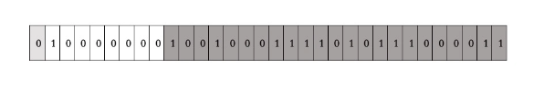
我们再用 IEEE 754 的那个算式来算一下：
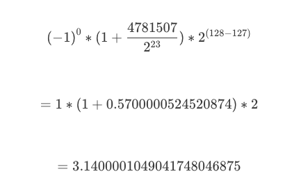
你看，浮点数的精度问题出现了。
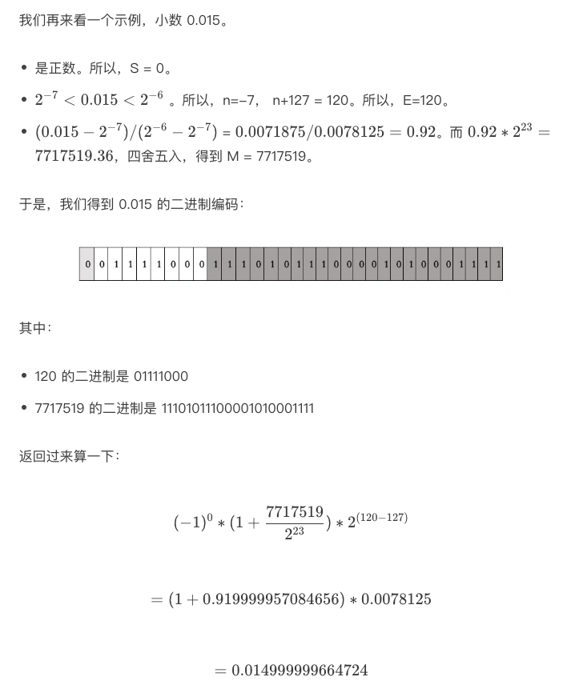
你看，浮点数的精度问题又出现了。
我们来用 C 语言验证一下：
int main() {
float x = 3.14;
float y = 0.015;
return 0;
}
在我的 Mac 上用 lldb 工具 Debug 一下。
(lldb) frame variable
(float) x = 3.1400001
(float) y = 0.0149999997
(lldb) frame variable -f b
(float) x = 0b01000000010010001111010111000011
(float) y = 0b00111100011101011100001010001111
从结果上，完全验证了我们的方法。
好了，不知道你看懂了没有？我相信你应该看懂了。
简化浮点数公式
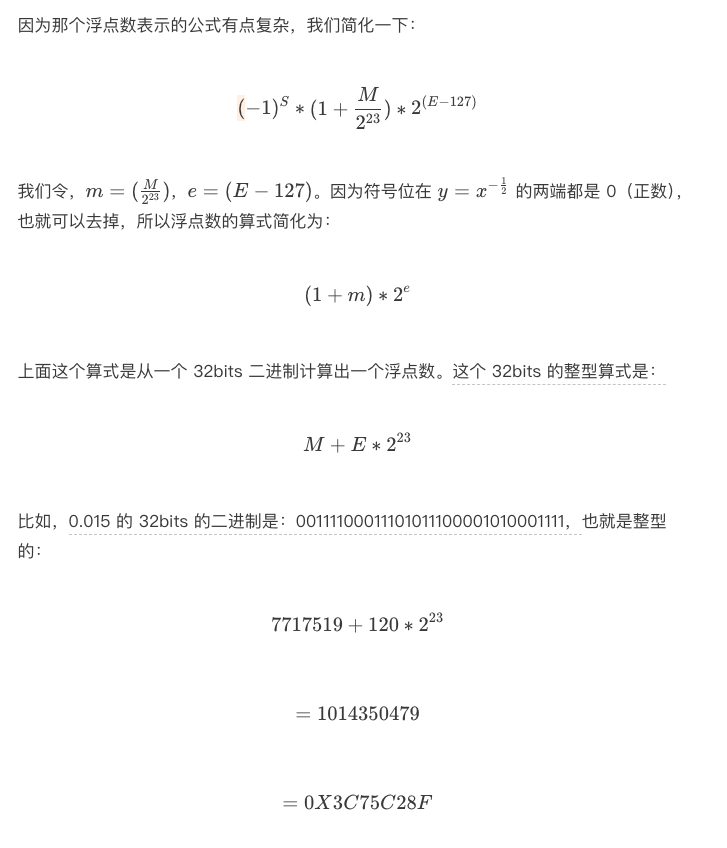
平方根倒数公式推导
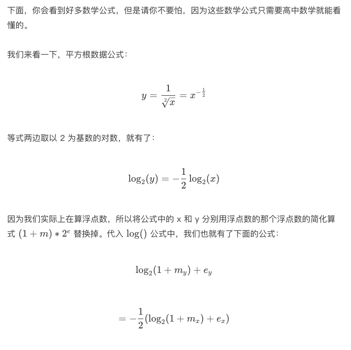
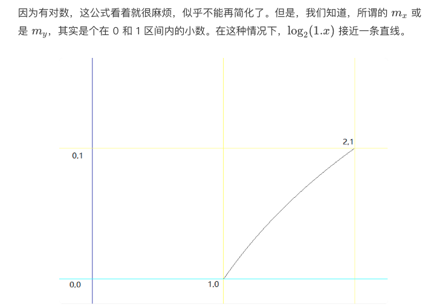
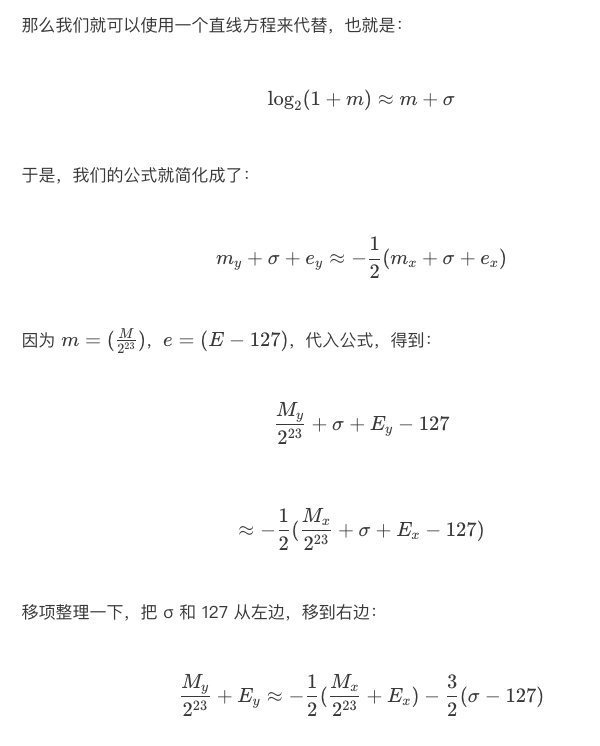
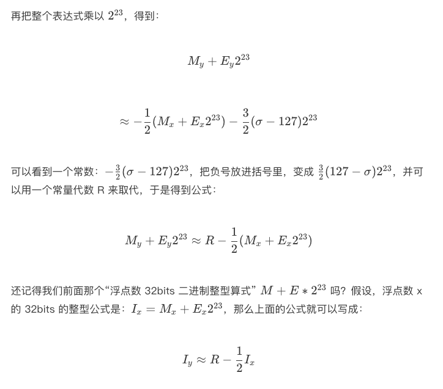
代码分析
让我们回到文章的主题，那个平方根函数的代码。
首先是：
i = * ( long * ) &y; // evil floating point bit level hacking
这行代码就是把一个浮点数的 32bits 的二进制转成整型。也就是，前面我们例子里说过的，3.14 的 32bits 的二进制是：01000000010010001111010111000011，整型是：1078523331。即 y = 3.14，i = 1078523331。
然后是：
i = 0x5f3759df - ( i >> 1 ); // what the fuck?
这就是：
i = 0x5f3759df - ( i / 2 );
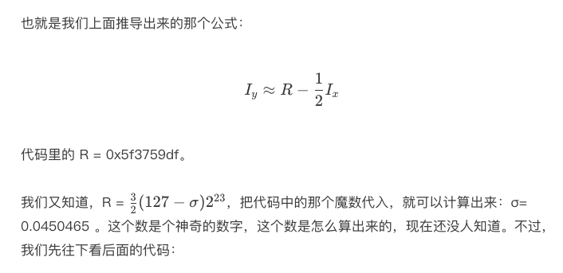
x2 = number * 0.5F;
y = * ( float * ) &i;
y = y * ( threehalfs - ( x2 * y * y ) ); // 1st iteration
// 2nd iteration, this can be removed
// y = y * ( threehalfs - ( x2 * y * y ) );
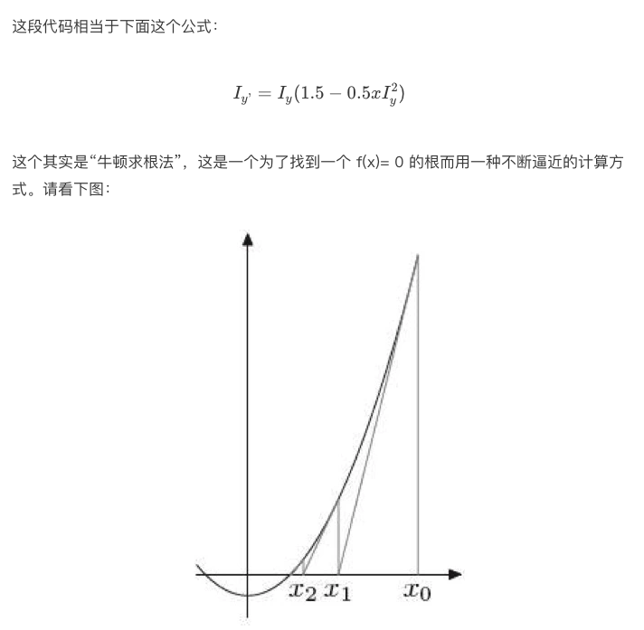
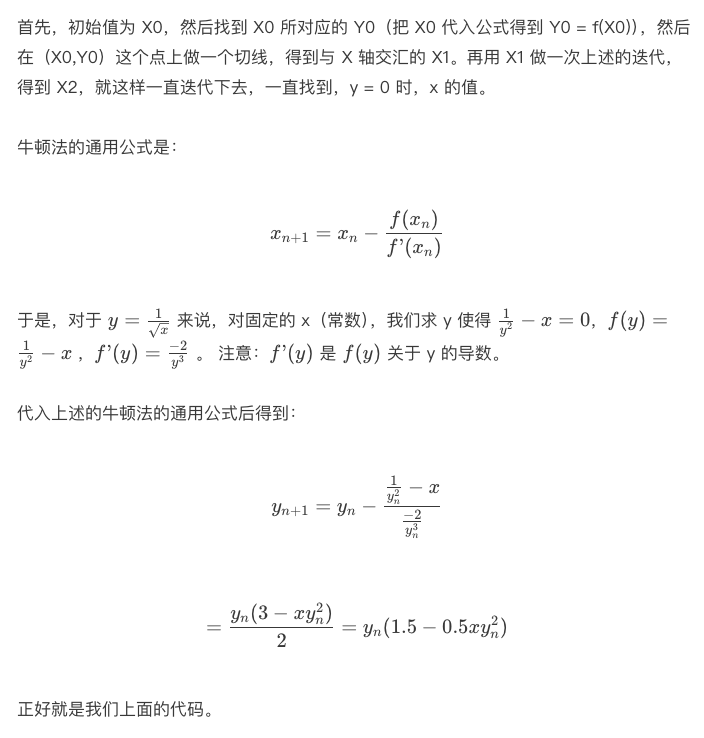
整个代码是，之前生成的整数操作产生首次近似值后，将首次近似值作为参数送入函数最后两句进行精化处理。代码中的两次迭代正是为了进一步提高结果的精度。但由于《雷神之锤 III》的图形计算中并不需要太高的精度，所以代码中只进行了一次迭代，二次迭代的代码则被注释了。
相关历史
根据 Wikipedia 上的描述，《雷神之锤 III》的代码直到 QuakeCon 2005 才正式放出，但早在 2002 年（或 2003 年）时，平方根倒数速算法的代码就已经出现在 Usenet 和其他论坛上了。最初人们猜测是《雷神之锤》的创始人 John Carmack 写下了这段代码，但他在回复询问他的邮件时否定了这个观点，并猜测可能是先前曾帮 id Software 优化《雷神之锤》的资深汇编程序员 Terje Mathisen 写下了这段代码。
而 Mathisen 的邮件里表示，在 1990 年代初，他只曾做过类似的实现，确切来说这段代码亦非他所作。现在所知的最早实现是由 Gary Tarolli 在 SGI Indigo 中实现的，但他亦坦承他仅对常数 R 的取值做了一定的改进，实际上他也不是作者。
在向以发明 MATLAB 而闻名的 Cleve Moler 查证后，Rys Sommefeldt 则认为原始的算法是 Ardent Computer 公司的 Greg Walsh 所发明的，但他也没有任何确定性的证据能证明这一点。
不仅该算法的原作者不明，人们也仍无法确定当初选择这个“魔术数字”的方法。Chris Lomont 曾做了个研究：他推算出了一个函数以讨论此速算法的误差，并找出了使误差最小的最佳 R 值 0x5f37642f（与代码中使用的 0x5f3759df 相当接近）。但以之代入算法计算并进行一次牛顿迭代后，所得近似值之精度仍略低于代入 0x5f3759df 的结果。
因此，Lomont 将目标改为查找在进行 1-2 次牛顿迭代后能得到最大精度的 R 值，在暴力搜索后得出最优 R 值为 0x5f375a86，以此值代入算法并进行牛顿迭代，所得的结果都比代入原始值（0x5f3759df）更精确。于是他说，“如果可能我想询问原作者，此速算法是以数学推导还是以反复试错的方式求出来的？”
Lomont 亦指出，64 位的 IEEE754 浮点数（即双精度类型）所对应的魔术数字是 0x5fe6ec85e7de30da。但后来的研究表明，代入 0x5fe6eb50c7aa19f9 的结果精确度更高（McEniry 得出的结果则是 0x5fe6eb50c7b537aa，精度介于两者之间）。
后来 Charles McEniry 使用了一种类似 Lomont 但更复杂的方法来优化 R 值。他最开始使用穷举搜索，所得结果与 Lomont 相同。而后他尝试用带权二分法寻找最优值，所得结果恰是代码中所使用的魔术数字 0x5f3759df。因此，McEniry 认为，这一常数最初或许便是以“在可容忍误差范围内使用二分法”的方式求得。
这可能是编程世界里最经典的魔数的故事，希望你能够从这节课中收获一些数学的基础知识。数学真是需要努力学习好的一门功课，尤其在人工智能火热的今天。